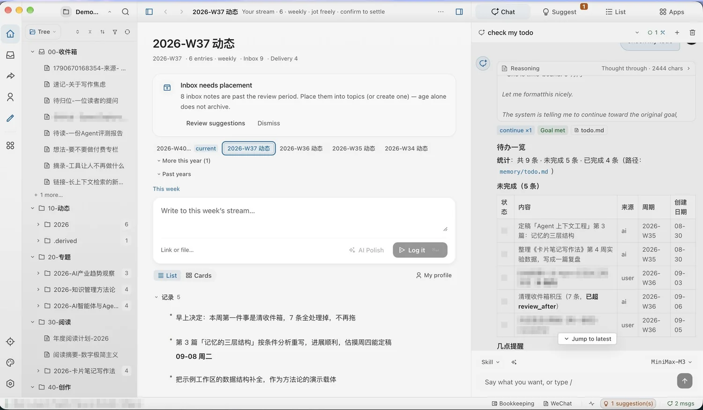
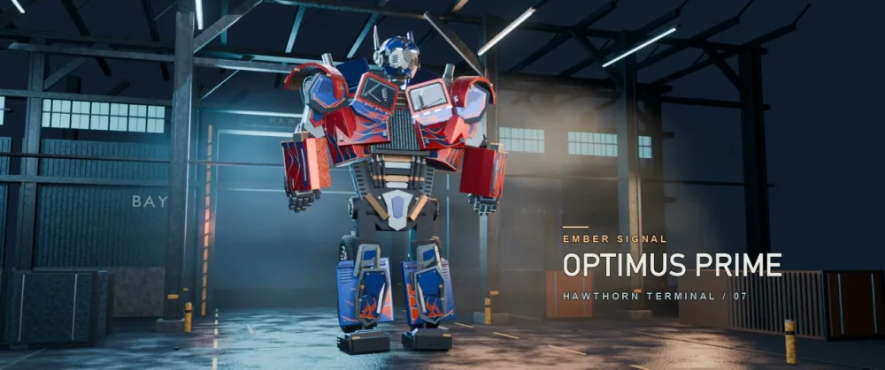

开源代表作
查看 GitHub 仓库方法与技能
查看交接流程
- 各工具把更新写入私有 Git 仓库
- 在本机编译共享视图和场景视图
- 需要时导出便携 Markdown 交接包
查看演示能力
topmind-research 跟踪 AI 一手信源，核验事实与出处
GROK BOTS
X Pulse
用可交互的时间表盘，回放自己的 X 动态，或追踪一个话题的热度。



topmind-research 跟踪 AI 一手信源，核验事实与出处
GROK BOTS
用可交互的时间表盘，回放自己的 X 动态，或追踪一个话题的热度。